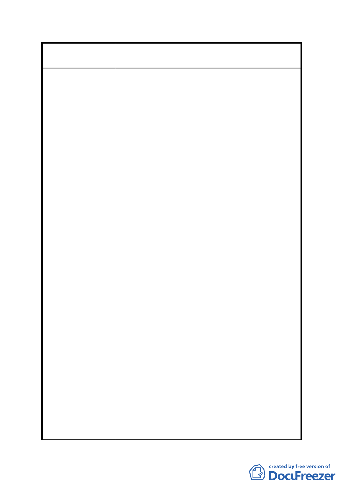

案名
變更臺北市內湖區蘆洲里附近部分工業區為
保護區、住宅區及道路用地主要計畫案
回饋金方式回饋辦理。
4. 為解決本區窳陋問題及令南港經貿園區及內湖
科技園區可形成連結，使臺北產業軸帶計畫之美
夢得以成真，本人亦願配合市府政策，但有一請
求即為保留此大樓，讓本人免除拆除重建之損
失，市府也可減輕重劃之負擔，另本人將回饋協
助此重劃案，回饋方案為約 43 萬/月（臺北市蘆
洲里工業區擬辦市地重劃區原位置保留建物分
期繳納健金計算表），由重劃開始持續回饋 7 年；
市府補貼款 5.8652 億+本大樓回饋約 0.36 億，
市府可減輕 6.2252 億之重劃負擔，既不勞財傷
民也可達成此計畫案之目的，懇請市府將此納入
考量範圍並列入整體計畫案內。
5. 致貴會審查本案時請以書面掛號通知聯絡人到
會說明。
981001 陳情
為台北市內湖區蘆洲里焚化爐周邊重劃事宜，建議
修正如下：現計劃案規劃之重劃 A、B 區建議更改為
商一及住宅區。
1. 同樣工業區為何別人可以工變商或住，我們捐了
45%土地卻依舊是工業區。
說明：本地區當年政府為了內湖垃圾山及內湖焚化
爐能順利運作，以解決台北市垃圾問題，市
政府積極地動用公權力辦理徵收，開闢計畫
道路，已經歷一次都市道路土地徵收，與內
湖其他地區由農田變為住宅區之重劃大不相
同。而今因為垃圾分類推廣成功致使內湖焚
化爐停爐，市府推出都市更新計畫，新增保
護區、道路等公共設施，且要求已配合徵收
過一次的小地主因為重劃得被迫再付出 45%
的土地，如此雙重剝削實在令我們損失慘重。
2. 封閉地區為何無商業區，人民如何生活。
說明：本區雖位處南港經貿園區及內湖科技園區之
中間地帶但地勢狹長、封閉，聯外交通並不
方便，未來發展性遠不如內科且商業行為非
- 20 -